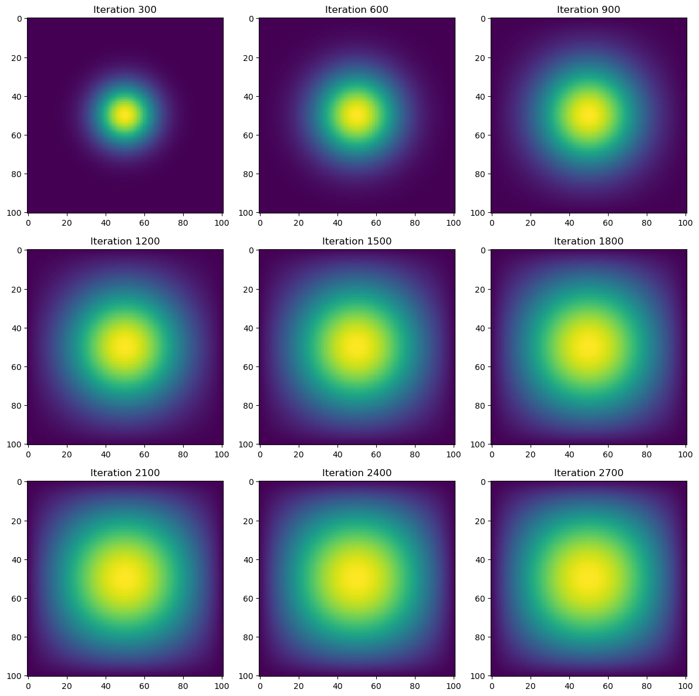

N = 101
epsilon = 0.2Intro
Hello! In this blog post we will go over how to simulate heat diffusion using four different methods. These methods consists of traditional matrix multiplication, using a sparse matrix, direct operation via numpy, and just-in-time complilation using JAX. We will compare how efficent these methods are by comparing the run time for each method. We hope to find a decrease in run time going from each method to the next.
Set Up
We will first set our constants for the heat diffusion problem.
We will then show the initial phase of the heat diffusion by placing one unit of heat in a middle of an NxN grid.
import numpy as np
from matplotlib import pyplot as plt
# construct initial condition: 1 unit of heat at midpoint.
u0 = np.zeros((N, N))
u0[int(N/2), int(N/2)] = 1.0
plt.imshow(u0)<matplotlib.image.AxesImage at 0x112d7c9d0>
As we can see have a 101x101 grid with the yellow dot representing the initial unit of heat.
Matrix Multiplication
We will now use Matrix Multiplication and the definitions of the heat diffusion equations to simulate the diffusion of this point over 2700 iterations.
We first need to define the function advance_time_matvecmul that calculates the next matrix for each iteration.
import inspect
from heat_equations import advance_time_matvecmul
print(inspect.getsource(advance_time_matvecmul))def advance_time_matvecmul(A, u, epsilon):
"""Advances the simulation by one timestep, via matrix-vector multiplication
Args:
A: The 2d finite difference matrix
u: N x N grid state at timestep k
epsilon: stability constant
Returns:
N x N Grid state at timestep k+1
"""
N = u.shape[0]
u = u + epsilon * (A @ u.flatten()).reshape((N, N))
return u
We can see that the function takes in A, u, and epsilon as its parameters. A represetns the finite difference matrix that we will define below. u is the grid at the next step, so each time the function is called we will return a new grid u, that shows the next step of the grid. Finally epsilon is the stability constant.
We define A as the following, using the function get_A(N).
from heat_equation import get_A
print(inspect.getsource(get_A))def get_A(N):
"""Generates the 2D finite difference matrix A for the heat equation
Args:
N: Size of the grid (N x N)
Returns:
2D finite difference matrix A
"""
n = N * N
diagonals = [-4 * np.ones(n), np.ones(n-1), np.ones(n-1), np.ones(n-N), np.ones(n-N)]
diagonals[1][(N-1)::N] = 0
diagonals[2][(N-1)::N] = 0
A = np.diag(diagonals[0]) + np.diag(diagonals[1], 1) + np.diag(diagonals[2], -1) + np.diag(diagonals[3], N) + np.diag(diagonals[4], -N)
return A
We can see that A is also an NxN, similarily to u, that defines what constants is needed to find the next step of the grid. Therefore we can see that the main computation in this method is multiplying the NxN matrices A and u for each iteration. T
his is a very costly computation. We will run the following script to find the results of the simulation and also inspect the runtime of this method.
import heat_equation as eq
import numpy as np
import matplotlib.pyplot as plt
import time
# Parameters
N = 101
epsilon = 0.2
iterations = 2700
visualization_interval = 300
# Initialize the grid
u = np.zeros((N, N))
u[int(N/2), int(N/2)] = 1.0
# Initialize list to store intermediate solutions
intermediate_solutions = []
# Get matrix A
A = eq.get_A(N)
# Run simulation
start_time_simulation = time.time()
for i in range(iterations):
# Advance the simulation by one timestep
u = eq.advance_time_matvecmul(A, u, epsilon)
# Store intermediate solutions every 300 iterations
if (i+1) % visualization_interval == 0:
intermediate_solutions.append(u)
end_time_simulation = time.time()
print(f"Total time taken for the simulation using Matrix Multiplication: {end_time_simulation - start_time_simulation} seconds")
# Visualize the diffusion of heat every 300 iterations
fig, axes = plt.subplots(3, 3, figsize=(12, 12))
for i in range(3):
for j in range(3):
index = i * 3 + j
iteration_number = (index + 1) * visualization_interval # Calculate iteration number dynamically
axes[i, j].imshow(intermediate_solutions[index])
axes[i, j].set_title(f"Iteration {iteration_number}")
plt.tight_layout()
plt.show()Total time taken for the simulation using Matrix Multiplication: 137.2656331062317 seconds
From the output we can see how the heat diffusion looks after 300 iterations, 600 iterations, and so on until iteration 2700. We can see that the heat spreads pretty evenly with the center retaining the most heat. The visualization is color mapped so we can see that yellow indicates a higher amount of heat while blue indicates little to no heat.
We can also see that this method took about 137 seconds to complete this simulation using the matrix multiplication method. We will try to shorten that run time using the next method.
Sparse Matrix
The next method we will use a spare matrix to represent the A matrix instead of our traditional matrix. Sparse matrices will significantly help with our efficiency because they only store the non zero values in a matrix. Since our matrix A has a lot of zero values this will hopefully be effective in reducing the computation time for the simulation.
Let’s show what the get_sparse_A function looks like.
from heat_equation import get_sparse_A
print(inspect.getsource(get_sparse_A)) def get_sparse_A(N):
"""Generates the sparse 2D finite difference matrix A for the heat equation
Args:
N: Size of the grid (N x N)
Returns:
Sparse 2D finite difference matrix A
"""
n = N * N
diagonals = [-4 * jnp.ones(n), jnp.ones(n-1), jnp.ones(n-1), jnp.ones(n-N), jnp.ones(n-N)]
diagonals[1] = diagonals[1].at[N-1::N].set(0)
diagonals[2] = diagonals[2].at[N-1::N].set(0)
A = jnp.diag(diagonals[0]) + jnp.diag(diagonals[1], 1) + jnp.diag(diagonals[2], -1) + jnp.diag(diagonals[3], N) + jnp.diag(diagonals[4], -N)
return sparse.BCOO.fromdense(A)
We can see that the implementation is very similar to our implementation of get_A, however we use the sparse function on A in order to convert the matrix into a spare matrix.
Let’s run another simulation but use the spare matrix this time to see if there is a decrease in the run time.
import heat_equation as eq
import numpy as np
import jax.numpy as jnp
from jax.experimental import sparse
import matplotlib.pyplot as plt
import time
# Parameters
N = 101
epsilon = 0.2
iterations = 2700
visualization_interval = 300
# Initialize the grid
u = np.zeros((N, N))
u[int(N/2), int(N/2)] = 1.0
# Initialize list to store intermediate solutions
intermediate_solutions = []
# Get sparse matrix A
A_sp_matrix = eq.get_sparse_A(N)
start_time_simulation = time.time()
# Run simulation
for i in range(iterations):
# Advance the simulation by one timestep
u = eq.advance_time_matvecmul(A_sp_matrix, u, epsilon)
# Store intermediate solutions every 300 iterations
if (i+1) % visualization_interval == 0:
intermediate_solutions.append(u)
end_time_simulation = time.time()
print(f"Total time taken for the simulation using JAX Sparse Matrix: {end_time_simulation - start_time_simulation} seconds")
# Visualize the diffusion of heat every 300 iterations
fig, axes = plt.subplots(3, 3, figsize=(12, 12))
for i in range(3):
for j in range(3):
index = i * 3 + j
iteration_number = (index + 1) * visualization_interval # Calculate iteration number dynamically
axes[i, j].imshow(intermediate_solutions[index])
axes[i, j].set_title(f"Iteration {iteration_number}")
plt.tight_layout()
plt.show()Total time taken for the simulation using JAX Sparse Matrix: 4.7250590324401855 seconds
We can see that this method of simulation gives the same output as before, but in much faster time. This method took about 4 seconds, which is about 34 times faster than the previous method.
This shows how powerful the sparse matrix is, as it was able to drastically cut down on the run time of the simulation.
We will hope to improve the effiency even further using our next method.
Direct Operation with numpy
We will use numpy’s np.roll() function in order to not have to do the full computation of the matrix multiplication. Using the roll() function in numpy we can instead find the value of the next matrix by using the surronding values of the matrix. This allows us to not have the full matrix mulitplication computation. Therefore, we hope that this new method would allow us to cut down on our run time.
Let’s take a look at the advance_time_numpy function that uses the roll() function to cut down on computation time.
from heat_equations import advance_time_numpy
print(inspect.getsource(advance_time_numpy))def advance_time_numpy(u, epsilon):
"""Advances the solution by one timestep using numpy operations
Args:
u: N x N grid state at timestep k
epsilon: stability constant
Returns:
N x N Grid state at timestep k+1
"""
padded_u = np.pad(u, 1, mode='constant') # Pad zeros to form (N+2) x (N+2) array
u_up = np.roll(padded_u, -1, axis=0)
u_down = np.roll(padded_u, 1, axis=0)
u_left = np.roll(padded_u, -1, axis=1)
u_right = np.roll(padded_u, 1, axis=1)
u_new = u + epsilon * (u_up[1:-1, 1:-1] + u_down[1:-1, 1:-1] + u_left[1:-1, 1:-1] + u_right[1:-1, 1:-1] - 4 * u)
return u_new
We can see that we must pad the matrix with zeros using np.pad. We then shift around the padded array the first and second axis (rows and columns) in the left/right and up/down directions. This gives us four new matrices that we will use to calculate the next matrix, u_new, in the heat diffusion.
Let’s run a script to see how this change performs.
import heat_equation as eq
import numpy as np
import matplotlib.pyplot as plt
import time
# Parameters
N = 101
epsilon = 0.2
iterations = 2700
visualization_interval = 300
# Initialize the grid
u = np.zeros((N, N))
u[int(N/2), int(N/2)] = 1.0
# Initialize list to store intermediate solutions
intermediate_solutions = []
# Get matrix A
A = eq.get_A(N)
# Run simulation
start_time_simulation = time.time()
for i in range(iterations):
# Advance the simulation by one timestep
u = eq.advance_time_numpy(u, epsilon)
# Store intermediate solutions every 300 iterations
if (i+1) % visualization_interval == 0:
intermediate_solutions.append(u)
end_time_simulation = time.time()
print(f"Total time taken for the simulation using direct operation: {end_time_simulation - start_time_simulation} seconds")
# Visualize the diffusion of heat every 300 iterations
fig, axes = plt.subplots(3, 3, figsize=(12, 12))
for i in range(3):
for j in range(3):
index = i * 3 + j
iteration_number = (index + 1) * visualization_interval # Calculate iteration number dynamically
axes[i, j].imshow(intermediate_solutions[index])
axes[i, j].set_title(f"Iteration {iteration_number}")
plt.tight_layout()
plt.show()Total time taken for the simulation using direct operation: 0.4622352123260498 secondsWe can see that we achieve the same output as before but the only change we made from the first script is replacing advance_time_matvecmul with advance_time_numpy.
This method of simulation only took about .46 seconds. This is about 10 times faster than method two and almost 300 times faster than the first method.
These results are very good and show how using direct operation instead of full matrix multiplication helps with effiency.
We will hope to improve on this with our last method.
JAX Just-In-Time Compilation
We will now try to decrease our run time using Just-In-Time (JIT) complilation from the JAX library. We will not use the sparse matrix from the second method, so the only difference would be to use the JIT advance time function instead of our original function.
Let’s take a look at how we define advance_time_jax().
from heat_equations import advance_time_jax
print(inspect.getsource(advance_time_jax))@jax.jit
def advance_time_jax(u, epsilon):
"""Advances the solution by one timestep using JAX operations
Args:
u: N x N grid state at timestep k
epsilon: stability constant
Returns:
N x N Grid state at timestep k+1
"""
padded_u = jnp.pad(u, 1, mode='constant') # Pad zeros to form (N+2) x (N+2) array
u_up = jnp.roll(padded_u, -1, axis=0)
u_down = jnp.roll(padded_u, 1, axis=0)
u_left = jnp.roll(padded_u, -1, axis=1)
u_right = jnp.roll(padded_u, 1, axis=1)
u_new = u + epsilon * (u_up[1:-1, 1:-1] + u_down[1:-1, 1:-1] + u_left[1:-1, 1:-1] + u_right[1:-1, 1:-1] - 4 * u)
return u_new
We can see that this method is very similar to our previous method with numpy with a couple important exceptions. We include @jax.jit at the top of the function definition, this ensures that we use the Just-In-Time compilation from JAX. We also use the jax.numpy library as jnp.
Let’s run a script to see how this method performs.
import heat_equations as eq
import numpy as np
import matplotlib.pyplot as plt
import time
# Parameters
N = 101
epsilon = 0.2
iterations = 2700
visualization_interval = 300
# Initialize the grid
u = np.zeros((N, N))
u[int(N/2), int(N/2)] = 1.0
# Initialize list to store intermediate solutions
intermediate_solutions = []
# Run simulation
start_time_simulation = time.time()
for i in range(iterations):
# Advance the simulation by one timestep
u = eq.advance_time_jax(u, epsilon)
# Store intermediate solutions every 300 iterations
if (i+1) % visualization_interval == 0:
intermediate_solutions.append(u)
end_time_simulation = time.time()
print(f"Total time taken for the simulation using Just-In-Time Compilation: {end_time_simulation - start_time_simulation} seconds")
# Visualize the diffusion of heat every 300 iterations
fig, axes = plt.subplots(3, 3, figsize=(12, 12))
for i in range(3):
for j in range(3):
index = i * 3 + j
iteration_number = (index + 1) * visualization_interval # Calculate iteration number dynamically
axes[i, j].imshow(intermediate_solutions[index])
axes[i, j].set_title(f"Iteration {iteration_number}")
plt.tight_layout()
plt.show()Total time taken for the simulation using Just-In-Time Compilation: 0.16453886032104492 seconds
We can see that the output is the same as before, however the method only took about .16 seconds. This is almost 3 times faster than our method from before using direct operations. Therefore by inlcuding JIT our effinency significantly increased. This is also over 800 times faster than our original method!
Run Time Comparison
Now that we have tried all four of our different methods, we look at the run times of all the methods and compare them.
Let’s run the following script to see how the run times compare.
# Data
methods = ['Matrix Multiplication', 'Sparse Matrix', 'Direct Operation', 'Just-In-Time Compilation']
times = [137.2656331062317, 4.7250590324401855, 0.4622352123260498, 0.16453886032104492]
# Calculate speedup relative to Matrix Multiplication
matrix_mult_time = times[0]
increase = [matrix_mult_time / time for time in times]
# Display method names, run times, and speedups
for method, time, speedup in zip(methods, times, speedups):
print(f"{method}: {time:.2f} seconds (Increase: {speedup:.2f}x)")Matrix Multiplication: 137.27 seconds (Increase: 1.00x)
Sparse Matrix: 4.73 seconds (Increase: 29.05x)
Direct Operation: 0.46 seconds (Increase: 296.96x)
Just-In-Time Compilation: 0.16 seconds (Increase: 834.24x)We an see that we have displayed the run times of each method along with how much faster the method is compared to the Matrix Multiplication method.
We see that Direct Operation and JIT Compilation were very fast, while Matrix Multiplication took a very long time. Therefore we should try to stick to Direct Operation and JIT Compilation when doing simulations that require a lot of calculations.
Outro
Thank you for reading my blog post! I hope you were able to learn more about simulations and run times in regard to the four different methods that we covered!